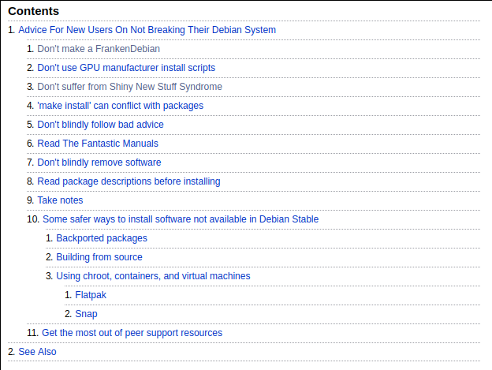

Functional Programming: Real World Performance, Nix and Warp Server
Wong Ding Feng
Created: 2019-07-29 Mon 11:59
Table of Contents
- 1. Who am I? Introduction to myself
- 2. The big problem
- 2.1. Some modern day package management systems
- 2.2. What about sub ecosystems?
- 2.3. How to make a package manager?
- 2.4. How to make a package manager?
- 2.5. Problems with modern package management
- 2.6. TODO Why imperative is bad? What is so imperative about installing packages?
- 2.7. Are you familiar with
DEPENDENCY HELL? - 2.8. All types of "HELL"
- 2.9. Not Atomic
- 2.10. Whats bad about imperative summary?
- 3. What it should/could/would have been?
1 Who am I? Introduction to myself
- Follow me on github! https://github.com/TomatoCream
- Linux user for 5 years now
- Ubuntu
- Proxmox
- ArchLinux
- Centos (server management)
1.1 My interests
- AI, ML
- Functional programming and abstraction (what the hell is so good about this?)
- Philosophy
- occam's razor <peekture>
1.2 For whom is this talk for?
- Linux users! Sorry windows users
- But not really (departs away from a unix way of doing things)
- Show you what functional programming can do?
- purity?
- referential transparency?
- State management
- DevOps
- Images, Docker, VM, Clusters
2 The big problem
- Has anyone ever used some sort of package management system?
2.1 Some modern day package management systems
| Package manager | Distributions |
|---|---|
| apt, apt-get | Debian, Ubuntu |
| rpm, yum | Redhat, Centos |
| pacman | ArchLinux |
| brew | MacOS |
2.2 What about sub ecosystems?
| Package manager | ??? |
|---|---|
| pip, virtualenv, pipenv | Python2,3(???) |
| npm, yarn | Nodejs |
| cabal, stack, hackage | Haskell :) |
| go? | go? |
| brew | MacOS |
| use-package, vim, fish, zsh | … |
2.3 How to make a package manager?
- What are the basic parts that we need?
2.4 How to make a package manager?
| build dependencies | What do I need to build the program? |
| runtime dependencies | What .so shared objects do I need? |
| configurations | What in /etc/... config files |
- essentially think of it as a graph, whenever we upgrade or install a package, we are mutating a node on this graph to point to something else.
2.5 Problems with modern package management
https://wiki.debian.org/DontBreakDebian#Don.27t_make_a_FrankenDebian 
2.6 TODO Why imperative is bad? What is so imperative about installing packages?
referential transparency
2.7 Are you familiar with DEPENDENCY HELL?
2.8 All types of "HELL"

- { DLL, dependency, npm, cabal } hell, different names for the same demon
- shared components like library links
cuda.7.sovscuda.6.so - multiple version side by side and roll backs
2.9 Not Atomic
- kill upgrades half way
COMMAND PID USER FD TYPE DEVICE SIZE/OFF NODE NAME dpkg 29329 root 3uW REG 8,7 0 262367 /var/lib/dpkg/lock
- Solution? Reformat!
2.10 Whats bad about imperative summary?
- No referential transparency
- cannot point to older versions of the same thing
- Dependency hell
- Not atomic upgrades
- unknown state if break half way
These problems are really similar to the problems with imperative languages!
like JAVA and people have already made solutions for them like how Haskell
does. We could learn a thing or two from them.
3 What it should/could/would have been?
- Imagine now that we implemented all the things of a functional programming language to create a functional package management system?
- What can we achieve?
- What can we do with this?
3.1 Introducing NixOS
- No referential transparency
- cannot point to older versions of the same thing
- Dependency hell
- Not atomic upgrades
- unknown state if break half way
3.2 demo 1
3.3 Extra goodies!
- same development environment as the runtime environment!
- show that 2 different version can run at the same time
- nix-shell
- easy revert
- show OS reboot.
3.4 Going all the way
- What happens if you go all the way?